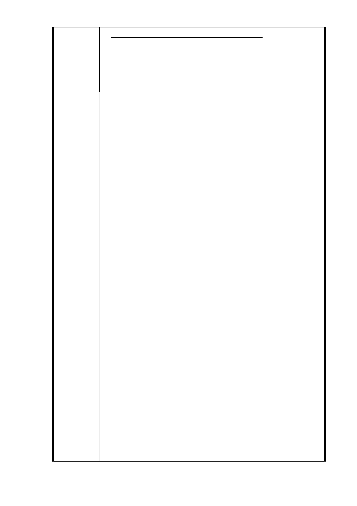

進一步審議，本局屆時將依審議結果辦理」。
故陳情人懇請 貴委會應撤銷本「公開展覽」或要求「捷運
局」變更設計，將本地號土地自該「聯開案」範圍內排除；
否則即應要求「捷運局」就陳情人於 12/09 所提出之主張
配合辦理，以兼顧本地號住戶獲得基本權益以上之保障。
建議辦法
1.同編號 7 研析意見。
2.本計畫 101 年 7 月 9 日都市計畫委員會第 3 次專案小組意
見略以：「R04 南側『捷二』用地之處理，請捷運局與居民
再做溝通，若仍傾向辦理聯合開發則中央七層樓建築物應
予納入為宜，否則就朝僅留設捷運所需必要設施進行劃
設。」及 102 年 8 月 1 日都市計畫委員會第 4 次專案小組
意見略以：「（一）程序上請市府捷運局先與都市發展局就
本案容積獎勵上限、獎勵項目內容循市府行政程序予以確
定，並研提開發權益分配概算方案至當地召開座談會進行
溝通協調後，再續提本專案小組審查。（二）議題層次上可
先就本次捷運局依前兩次會議所研擬之必要捷運設施及最
小面積用地，檢視三處開發基地採聯合開發或徵收之可行
性評估；如另有爭議部分，則建議應嘗試建立出一溝通平
台。……」
3.有關土地開發區(捷)基地容積獎勵原則，經本市都市計畫
市府回應
意見
委員會 102 年 9 月 17 日「捷運系統萬大~中和~樹林第一期
路線與信義線東延段都市計畫變更案土地開發區（捷）基
地容積獎勵原則」會議討論獲致共識，以捷運局所提方案，
即原則以土地開發區(捷)基地，依原建築容積(原容如低於
法容以法容為準)+0.5 倍法容+捷運獎勵之原則辦理。操作
上應加註以「一坪換一坪」為上限（平均值）辦理，因前
述容積獎勵原則涉及都市環境承載力與本府政策，仍應依
都市計畫委員會審議決議辦理。
4.R04 南側 7 層建物係坐落於信義區永春段 3 小段 351 地號
上，使用分區住三，法定建蔽率 45%、法定容積率 225%，
因屬原為建蔽率及面前道路檢討興建之建物，其原建蔽率
估算為 56%，原建築容積達 350%（仍應以建管處核准為準），
已達法定容積率）之 1.56 倍。依前述土地開發區(捷)基地
容積獎勵原則辦理時，已較一般都市更新獎勵為佳。另本
府捷運局依本計畫都市計畫委員會專案小組審查意見，就
R04 站捷二用地研擬必要捷運設施及最小面積用地之替代
方案，替代方案範圍分為兩區塊，西端通風井 Y（進、排氣
井），建議以最小面積採徵收方式取得（面積約 292m2）；東
- 31 -